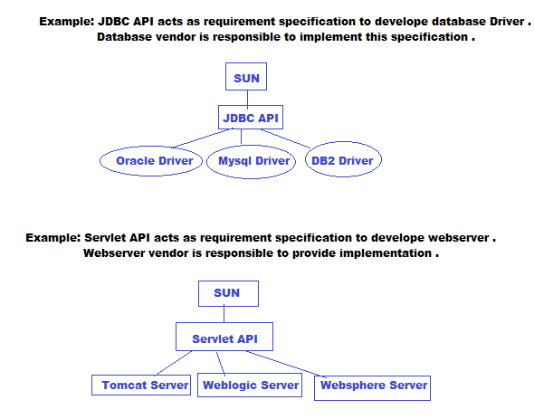
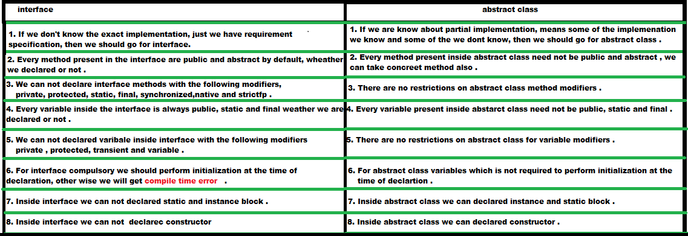

Interface:
Introduction:
- Any service requirement specification is considered as an
interface .

- From the client point of view, interface defines the set of
services what he is expecting . and from the service provider point
of view, interface defines the set of services what he is offering .
Hence interface is acts as a contract between client and service
provider .
- Inside interface every method is abstract . Hence interface
is also considered as 100% pure abstract class .
interface declaration and implementation
:
- Whenever we implementing an interface for each and every
method of that interface we should provide implementation, otherwise
we have to declare the class as abstract . And for that abstract
class, child class is responsible to provide implementation .
- Whenever we are implementing interface methods, compulsory we
should declare that method as public in implementation class,
otherwise we will get Compile Time Error .
extends vs implements :
- A class can extend only one class at a time where as an
interface can extend any number of interfaces simultaneously .
- A class can implements any number of interface simultaneously
.
- A class can extend another class and can implement any number
of interfaces simultaneously .
interface methods :
- Every interface method is always public and abstract whether
we are declaring or not .
- As every interface method is public and abstract whether we
are declaring or not, so we can not declare interface methods with
the following modifiers
- private
- protected
- final
- synchronized
- static
- native
interface variables :
- An interface can contain variables .
- The main purpose of interface variables is to define
requirement level constants .
- Every interface variables is always public static and final
weather we are declaring or not .
- interface variables we must have to initialize, or else we
will get compile time error .
- We can access interface variables inside implementation
class, but we can not modify .
- As every interface variable is always public, static and
final, we can not declare with the following modifiers .
- private
- protected
- transient
- volatile
interface naming conflicts :
- CASE 1: If two interfaces contains a method with same
signature and same return type then in the implementation class one
method implementation is enough .
- CASE 2: If two interface contain a method with same name but
with different arguments then in the implementation class we have to
provide implementation for both methods and these methods acts as
overloaded methods .
- CASE 3: If two interfaces contain a method with same
signature but different return types then it is impossible to
implement both interfaces simultaneously .
- We can not write any java class which implement both
interfaces simultaneously .
Questions : Is a java class can implement any no of interfaces
simultaneously ? .
Answer : Yes , Except if two interfaces contain a method with
same signature but with different return types .
Interface variable naming conflicts :
- CASE 1: If two interfaces contain a variable with same name
and there may be a chance of variable naming conflict, but we can
resolve by using interface names .
Adapter Classes:
- An Adapter class is a simple Java class that implements an
interface with only empty implementations .
- If we implement an interface directly compulsory we should
provide implementation for each and every method of that interface,
whether we are interested or not .
- The problem in this approach is it increases length of the
code and reduces readability, it increases complexity of the
programming .
- But we can resolve this problem by using Adapter class .
- Instead of implementing interface if we extend from Adapter
class then we have to provide implementation only for required
methods, but not for total methods of interface .
- The advantages of this approach is length of the code will be
reduced and readability will be improved .
Marker Interface:
- An interface which does not contain any methods and by
implementing that interface if our objects will get some ability such
type of interface are called Marker Interface
Example: ---------- Serializable, Cloneable, RandomAccess,
SingleThreadModel.
Serializable: ------------- By implementing Serializable
interface our objects can travel accross the network and can be saved
to a file .
Cloneable: ---------- By implementing Cloneable interface our
objects can able to produce exactly duplicate objects .
Questions : Without having any methods how we are getting
ability in marker interfaces .?
Answer : Internally JVM is responsible to provide required
ability .
Questions :Why JVM is providing required ability in marker
interface ?
Answer :To reduce the complexity of the programming .
interface vs abstract class vs concrete
class:
- If we don't know anything about implementation just we have
requirement specification then we should go for interface .
- If we know the partial implementation then we should go for
class .
- If we know the implementation completely and ready to provide service then we should go for concrete class .
Difference between interface and abstract class :

Question: We can not create object for abstract class but why we need constructor ?
Answer: Abstract class constructor will be executed to perform initialization of child object at the time of child object creation.
Note : Either directly or indirectly we can not create object for abstract class .
Whenever we are creating child class object then parent class constructor will be executed, but parent object won't be created.